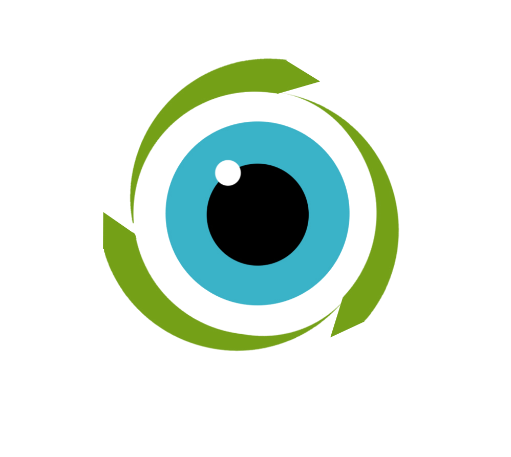
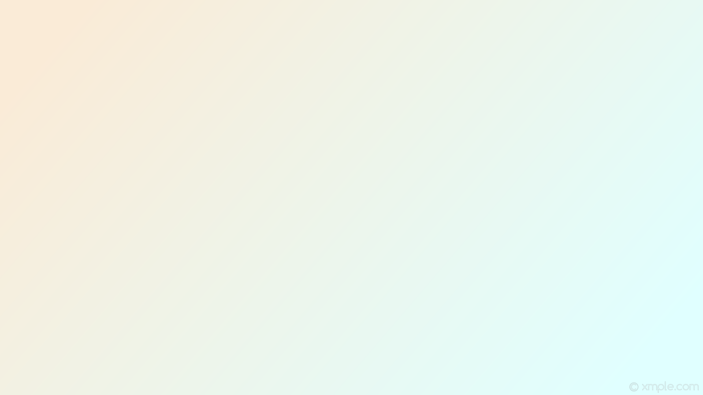

<ion-view title="Observatório de Resíduos" id="home">
    <ion-content padding="true" class="has-header padding view-with-bg" scroll="true">
      <div class="home-logo">
          
          
          
      </div>
        <div class="home-search-bar">
            <label class="item-input-wrapper">
                <i class="icon ion-search placeholder-icon"></i>
                <input class="searchclass" type="search" placeholder="Busca">
            </label>
        </div>

        <div class="home-grid">
           <div class="list list-inline">
            <button class="icon button-icon" ui-sref="map">
                <i class="icon ion-map"></i><br>Mostrar Mapa
            </button>

            <button class="icon button-icon" ui-sref="tabs.markings.myMarkings">
                <i class="icon ion-pin"></i><br>Ver minhas marcações e próximas
            </button>

            <button class="icon button-icon" ui-sref="tabs.newMarkings.newMarking">
                <i class="icon ion-location"></i><br>Criar nova marcação
            </button>

            <button class="icon button-icon" ui-sref="tabs.to-contribuindo.welcome">
                <i class="icon ion-compose"></i><br>Ver projetos do Tô Contribuindo
            </button>

            <button class="icon button-icon" ui-sref="profile">
                <i class="icon ion-person"></i><br>Ver meu perfil
            </button>

            <button class="icon button-icon" ui-sref="signin">
                <i class="icon ion-log-out"></i><br>Sair da aplicação
            </button>
          </div>
        </div>
    </ion-content>
    <ui-view name="home-page"></ui-view>
</ion-view>
